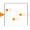

FractionalDelayDelay the clocked input signal for a fractional multiple of the sample period |

|
Parameters (2)
| shift |
Value: 0 Type: Integer Description: Delay = interval() * shift/resolution |
|---|---|
| resolution |
Value: 1 Type: Integer Description: Time quantization resolution of sample interval |
Connectors (2)
| u |
Type: IntegerInput Description: Connector of clocked, Real input signal |
|
|---|---|---|
| y |
Type: IntegerOutput Description: Connector of clocked, Real output signal |